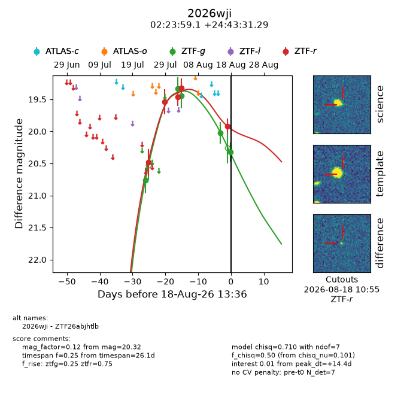
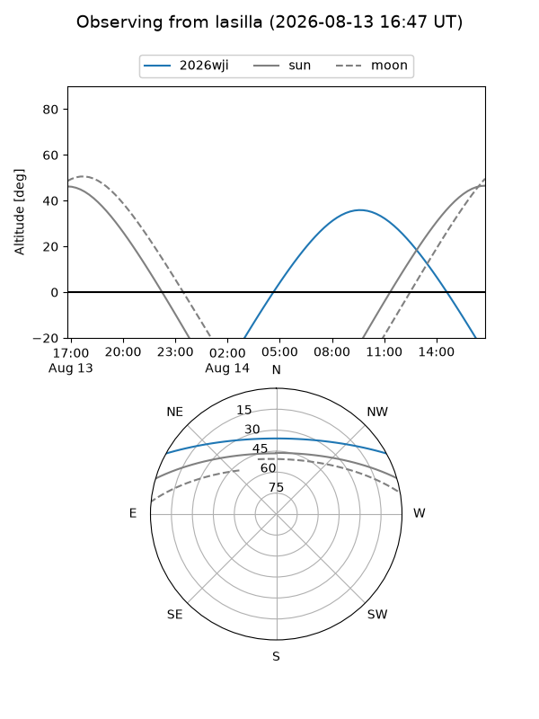
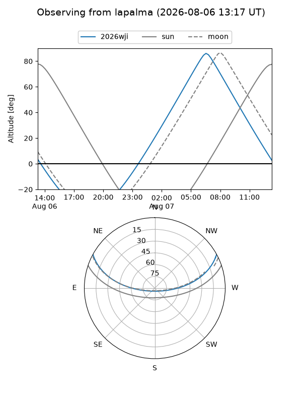
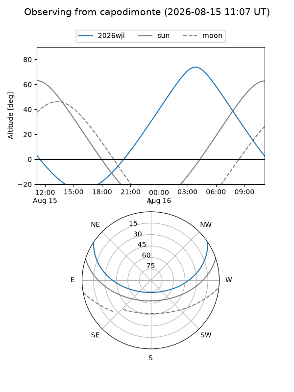
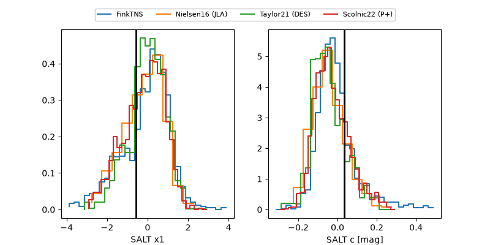

2026wji
Target 2026wji at 2026-08-18 13:40
Aliases and brokers:
FINK-ZTF: ztf.fink-portal.org/ZTF26abjhtlb
Lasair-ZTF: lasair-ztf.lsst.ac.uk/objects/ZTF26abjhtlb
ALeRCE-ZTF: alerce.online/object/ZTF26abjhtlb
YSE-PZ: ziggy.ucolick.org/yse/transient_detail/2026wji
TNS name: wis-tns.org/object/2026wji
Direct TNS query: direct search
alt names
ZTF26abjhtlb (ztf,fink_ztf)
2026wji (tns,yse)
Coordinates:
equatorial (ra, dec) = 35.9961,+24.72536
equatorial (HMS+DMS) = 02:23:59.07,+24:43:31.29
galactic (l, b) = (148.2881,-33.54927)
Flags:
TNS type: nan
peak dt: +14.4
Photometry:
last ztfg=20.32, ztfr=19.92
5 ztfg, 5 ztfr detections
Lightcurve

Visibility



Additional plots
